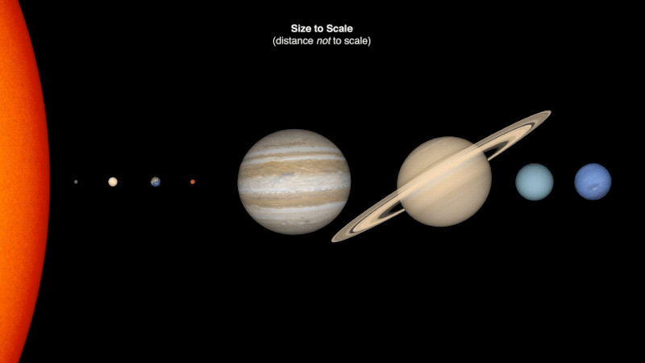
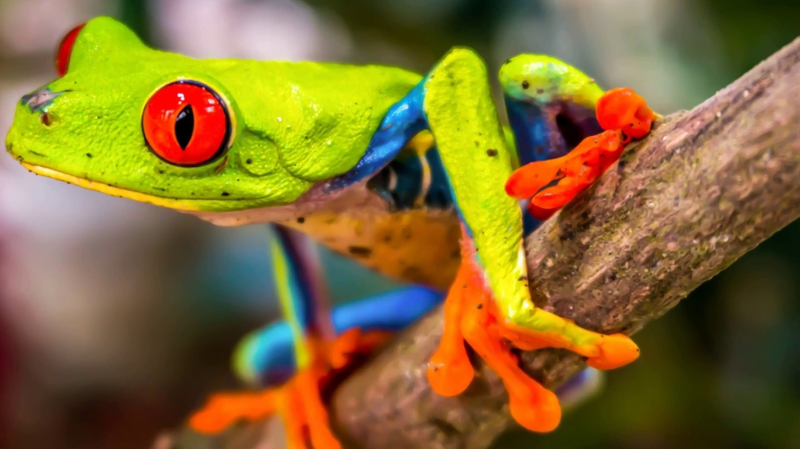
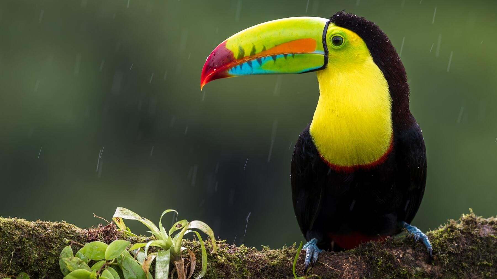
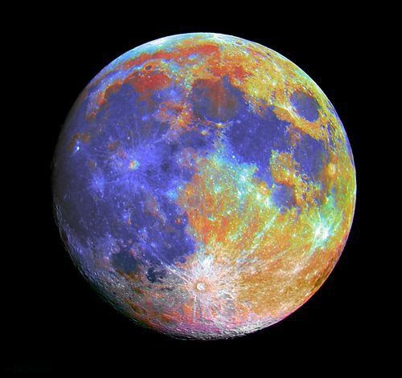

Nos encontramos en la Tierra planeta del sistema solar que gira alrededor de su estrella —el Sol— en la tercera órbita más interna. También es el mayor de los cuatro terrestres o rocosos, nacio hace aproximadamente 4550 millones de años y la vida surgió unos mil millones de años después siendo asi el hogar de millones de especies, incluidos los seres humanos (nosotros) y actualmente el único cuerpo astronómico donde se conoce la existencia de vida.
La atmósfera y otras condiciones abióticas han sido alteradas significativamente por la biosfera del planeta, favoreciendo la proliferación de organismos aerobios, así como la formación de una capa de ozono que junto con el campo magnético terrestre bloquean la radiación solar dañina, permitiendo así la vida en la Tierra. Las propiedades físicas de la Tierra, la historia geológica y su órbita han permitido que la vida siga existiendo. Se estima que el planeta seguirá siendo capaz de sustentar vida durante otros 500 millones de años,ya que según las previsiones actuales, pasado ese tiempo la creciente luminosidad del Sol terminará causando la extinción de la biosfera.
 La Tierra interactúa gravitatoriamente con otros objetos en el espacio, especialmente el Sol y la Luna. En la actualidad, la Tierra completa una órbita alrededor del Sol cada vez que realiza 366,26 giros sobre su eje, lo cual es equivalente a 365,26 días solares o un año sideral.La Tierra posee un único satélite natural, la Luna, que comenzó a orbitar la Tierra hace 4530 millones de años; esta produce las mareas, estabiliza la inclinación del eje terrestre y reduce gradualmente la velocidad de rotación del planeta.
